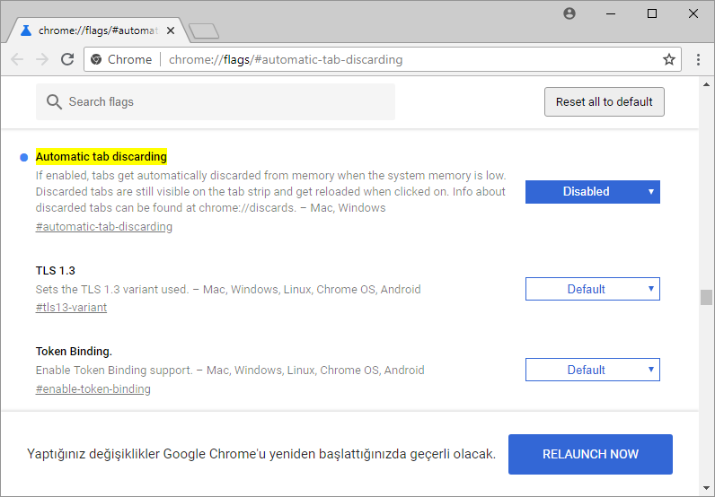

Chrome'da Arkada Kalan Sekmelerin Donmasını Engellemek
Chrome’un yeni zırvalarından biri de sekme değiştirildiğinde arkaya alınan sekmeyi RAM’den kısmen çıkartması ve sekmeye tekrar girildiğinde sekmenin en baştan açılması. Chrome sürekli olarak bu tarz eklemeler yapıyor ve bunları kapatacak bir seçeneği ayarlar sayfasına eklemiyor. Derdi minimalist olmak, fakat ayar yapacak adam minimalizm aramaz. Bu sinir bozucu yeniliği kapatmak için Chrome’un gizli ayarlarına girmek gerekiyor; yine. Tıpkı Chrome’da sekmelerin sesini tek tıkla kapatıp açmaktan bahsettiğimiz yazıdaki gibi. Tek fark, orada gizli bir özelliği aktive ederek Chrome’a bir nevi ekliyorduk.
Ben yüzlerce sekmeyle çalışırım ve sekmeleri bir not alma aracı olarak kullanırım. Sekmeler arasında geçiş yaparken bir videoyu, bir sesi yarıda durdurup başka bir sekmeye geçmişsem veya bir metin yazıyorsam ve ona devam ederken sekme değiştirmişsem bu zırva yüzünden bunlar yalan olabiliyor. Özellikle bilgisayarın o anki bellek durumuna göre tıklar tıklamaz sekme hafızadan silinebiliyor ve yan sekmeye bakıp döndüğünüz an çalışmanız gidiyor veya nerede kaldığınız bilgisini kaybediyorsunuz.
Çözüm
Gelelim çözüme. Chrome’un otomatik sekme kaldırma (automatic tab discarding) özelliğini devre dışı bırakmak için Chrome’un gizli Flags sayfasına ulaşmanız gerek. Bu sayfadaki “automatic tab discarding” seçeneğine doğrudan ulaşmak için chrome://flags/#automatic-tab-discarding adresini girmeniz yeterli. Diğer türlü yalnızca chrome://flags/ yazarak seçenekler arasında kendiniz de bulabilirsiniz. Buradaki “Default” seçeneğini “Disabled” olarak değiştirin ve çıkacak “Relaunch Now” butonu ile de Chrome’u yeniden başlatın.

Aynı sayfada belirttiği gibi, çıkartılan sekmeleri incelemek, bilgi almak için chrome://discards/ sayfasını kullanabilirsiniz. Bu özelliği nasıl daha ayrıntılı kullanacağınızdan vesaire bahsetmeyi düşünmüyorum, çünkü bu gibi firmaların bu tür değişiklikleri dayatması sonucu eninde sonunda öğreniyorsunuz.
Alternatif Bellekten Kazanç Yolu
Belleği doldurmadan çok fazla sekmeyle çalışmayı ise yıllardır kendime alışkanlık haline getirdim. Google Chrome’un görev yöneticisi aracılığıyla kendi seçtiğim sekmeleri hafızadan çıkartıyorum. Chrome’un görev yöneticisini açmak için sekme barında boş bir alana sağ tıklayarak “Görev Yöneticisi” seçeneğine tıklayabilir veya doğrudan Shift + Esc kısayolunu kullanabilirsiniz. Görev yöneticisini kullanması ise oldukça basit. Dondurmak istediğiniz sekmeleri seçerek “İşlemi bitir” butonuna tıklayacaksınız. İster tek tek, ister Ctrl’yi basılı tutarak birden fazla, ister Shift’i basılı tutarak birden fazla art arda sekmeyi seçebilirsiniz. Tarayıcı hariç her işlemi sonlandırabilirsiniz.